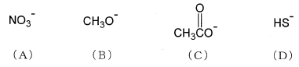

平成27年度 問3 有機化学及び燃料
二分子求核置換反応では求核剤の種類によって反応速度が大きく変わることが知られている。次の求核剤（A）～（D）がメタノール中でヨードメタンと二分子求核置換反応したとき、相対反応速度の大小関係として、最も適切なものはどれか。

①
A ＞ B ＞ C ＞ D
②
A ＞ C ＞ B ＞ D
③
B ＞ D ＞ C ＞ A
④
D ＞ B ＞ A ＞ C
⑤
D ＞ B ＞ C ＞ A
正答
⑤ D ＞ B ＞ C ＞ A
二分子求核置換反応とはSN2反応のことを表します。
求核試薬の求核性の強さを表す問題です。以下のようにいくつか強さを決める要因があります。
- 同じ原子の場合、負電荷を持つイオン形の方が分子形よりも求核性が高くなる
- 同周期の元素では、周期表の左側にある元素を含む求核試薬の方が求核性が高くなる
- 基本的に塩基性が強いほど求核性も高くなる傾向がある
- プロトン性溶媒(水など)と非プロトン性極性溶媒では、同族元素の求核性の順序が逆転することがある
問題ではプロトン性極性溶媒であるメタノールが溶媒として使われています。この場合、求核試薬がメタノールと水素結合して反応性が落ちてしまいます。電気陰性度が低く原子サイズが大きい（周期表の左下方向）元素を含むほど求核性が高くなることから、DのHS–が一番強くなります。
今回の選択肢の場合、全てが負電荷を帯びています。それぞれイオンの求核性を調べるには、共役酸の弱さを確認します。塩基性が強い（求核性の高い）化合物は共役酸が弱くなります。
- HNO3
- CH3OH
- CH3COOH
- H2S
共役酸の強さから、求核性はAのNO3–が一番弱くなります。また酢酸とメタノールでは酢酸の方が酸性が強いことから、求核性はCH3O– ＞ CH3COO–となります。
よってD ＞ B ＞ C ＞ Aです。